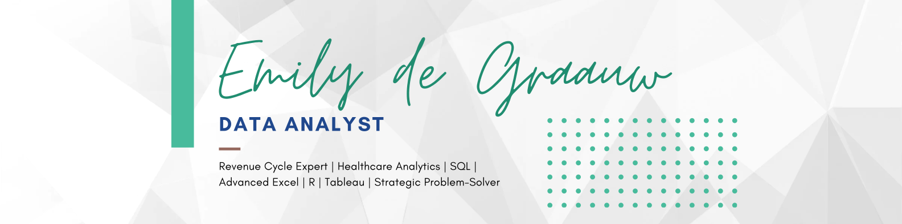

Emergency Department Tableau Project

PLEASE NOTE:
Scaling for this dashboard is automatic, and all features may not be visible.
Feel free to view dashboard directly on myTableau Profile.
Business Task and Overview:
The primary task was to create an interactive dashboard to analyze ED performance metrics, patient demographics, wait times, satisfaction levels, and referral patterns. This analysis helps hospital stakeholders make informed decisions regarding patient care optimization, staffing, and departmental resources to enhance operational efficiency and patient satisfaction.Business Recommendations:
- Improve Patient Wait Times: Address peak wait times by allocating more staff during "high-traffic" periods. This can help reduce patient bottlenecks and improve flow.
- Boost Patient Satisfaction: Given the average satisfaction score of 4.99/10, we should initiate targeted patient experience programs. This could involve revisiting communication practices, streamlining processes, or introducing comfort measures in the waiting area.
- Strategic Staffing Adjustments: Use the data on patient volume and age distribution spikes to inform proactive staffing strategies, especially during surges like those observed in March and August 2020. Additional staff may help manage unexpected influxes tied to external factors such as the COVID-19 Pandemic.
- Resource Allocation for Referral Departments: The referral data indicates high admission numbers to General Practice and Orthopedics. By ensuring these departments have the necessary resources (staffing, equipment, etc) we can better support patient outcomes and workflow efficiency.
- Diversity and Inclusion Focus: With detailed racial demographics, the hospital can review patient care approaches to ensure services meet the needs of its diverse population and address any potential disparities.